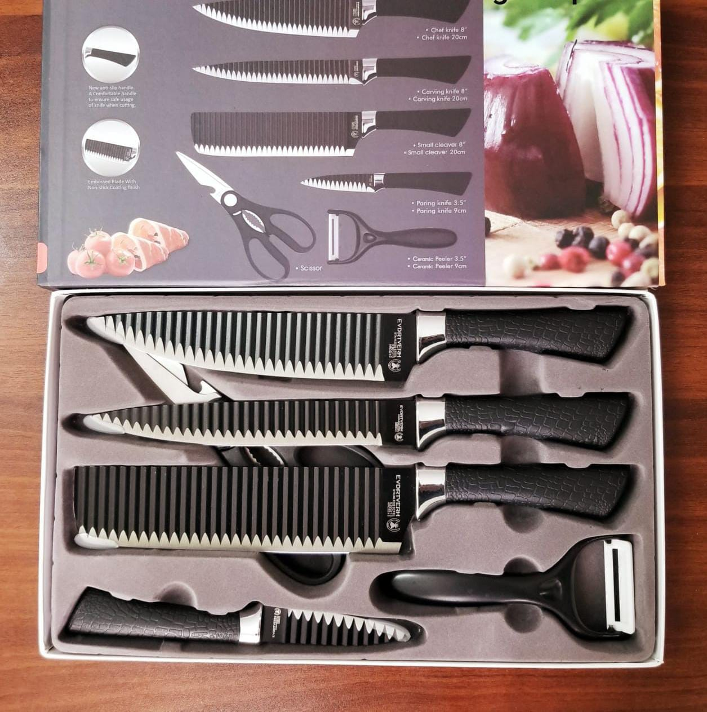
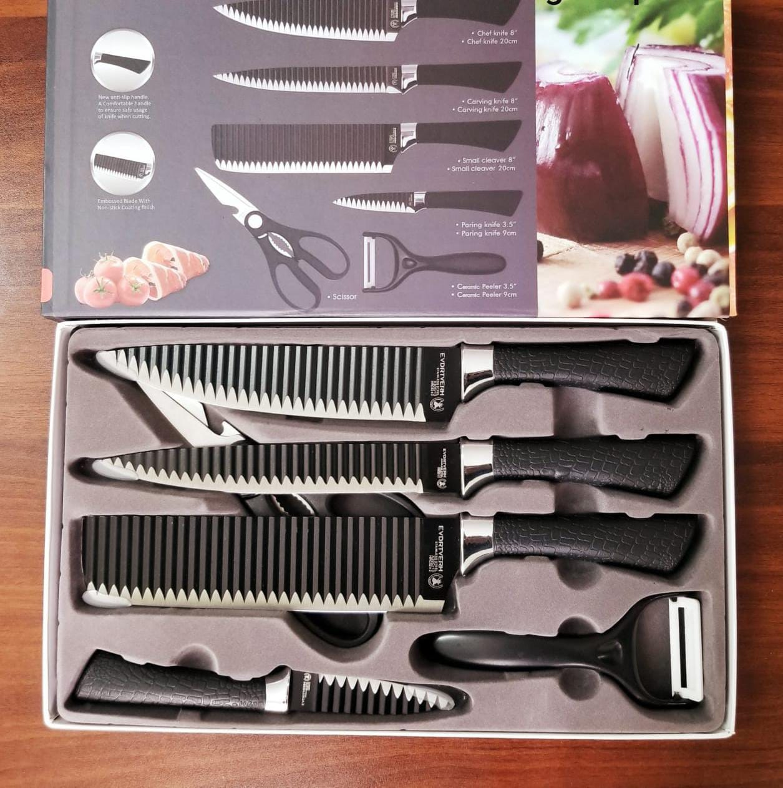
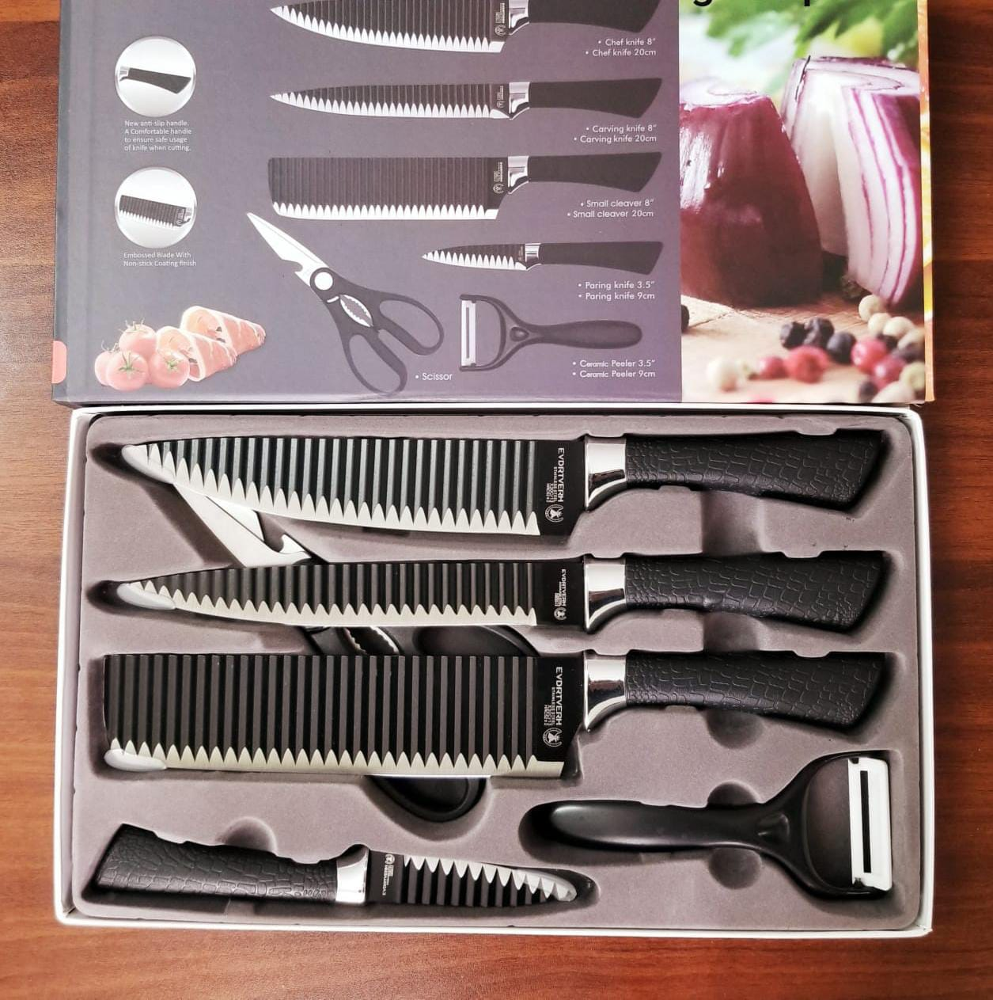
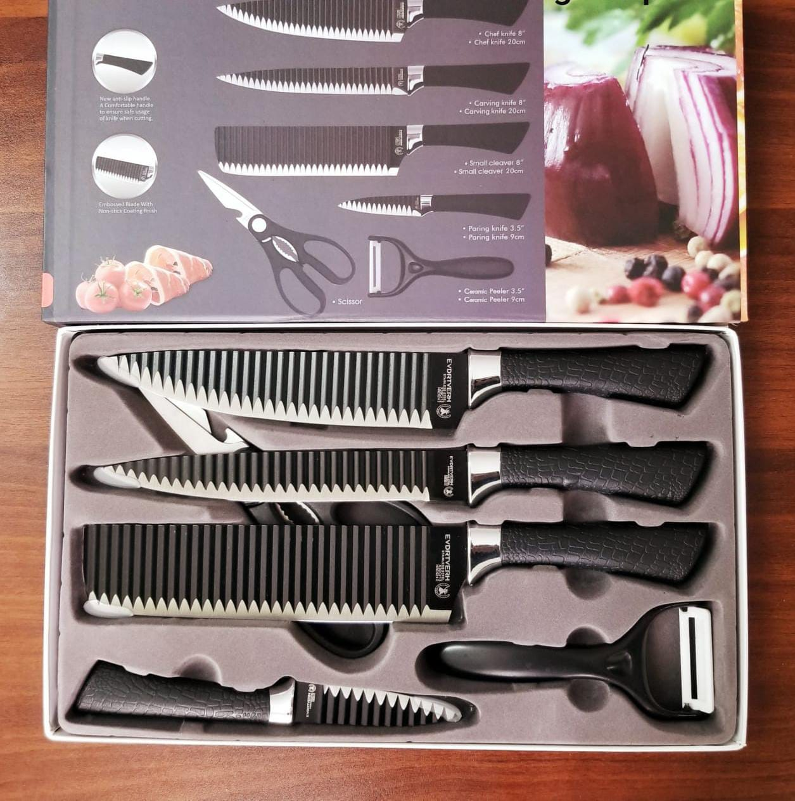

 

They come in different shapes,
sizes and materials and are designed to make
various cooking tasks easier and more efficient.
The few examples of the kitchen utensils available
are cutting board,grater,whisk,hotpots,ladle,
peeler,tongs,knife,spatula making preparations
much easier and enjoyable.
They are tools used to serve and eat food during meals.br
Examples are spoon,knife,plate,bowl,glass,cup,foek.hotpots